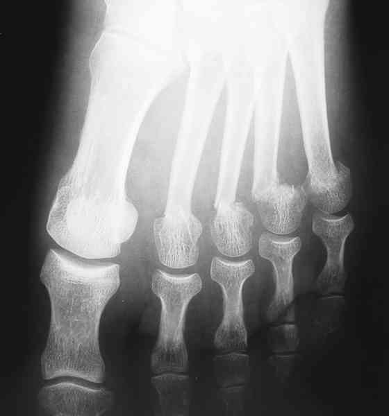
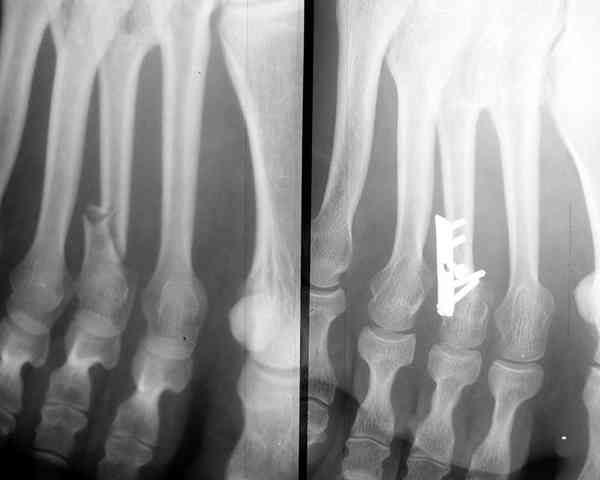

Bienvenue Sur Medical Education
Fractures : métatarsiens
Spécialité : traumatologie /
Points importants
-
Toute imperfection de réduction des métatarsiens va être à l'origine, à plus ou moins long terme, d'une désorganisation du clavier métatarsien source de métatarsalgies difficiles à traiter
-
Le pied est fondamental pour se tenir debout, marcher, courir, se chausser et toute négligence peut retentir gravement sur la qualité de la vie
-
Importance d'analyser le caractère déplacé des fractures, leur nombre, leur siège (notamment l'intégrité de l'articulation tarso-métatarsienne)
Présentation clinique / CIMU
SIGNES FONCTIONNELS
-
Douleur
-
Impotence fonctionnelle variable
CONTEXTE
Présentation clinique / CIMU
SIGNES FONCTIONNELS
- Douleur
- Impotence fonctionnelle variable
CONTEXTE
Circonstances de survenue
- Traumatisme direct sur l'avant-pied ou indirect de la cheville
EXAMEN CLINIQUE
- Douleur à la palpation du foyer fracturaire
- Recherche de plaie éventuelle
- Œdème et ecchymose de l'avant-pied
_913
- - -
Examen clinique de cheville et de pied

_393
Photo
Fractures des cols des 2e, 3e, 4e, 5e métatarsiens
Les fractures déplacées nécessitent un traitement chirurgical

_394
Photo
Ostéosynthèse d'une fracture déplacée du 3e métatarsien
Les fractures non déplacées sont traitées de manière orthopédique
_952
- - -
Strapping d'une fracture styloïde du 5e métatarsien
_876
- - -
Botte pédieuse
_945
- - -
Botte plâtrée
Auteur(s) : Jean-Jacques BANIHACHEMI, Dominique SARAGAGLIASignes paracliniques
IMAGERIE
Diagnostic étiologique
Traitement
AVANT RADIOGRAPHIES
APRES RADIOGRAPHIES
Devenir / orientation
CRITERES D'ADMISSION
CRITERES DE SORTIE
ORDONNANCE DE SORTIE
RECOMMANDATIONS DE SORTIE
Bibliographie